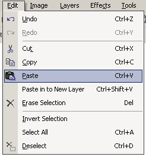

Paste Operation
|
 The Paste Operation (Edit--> Paste) allows the user to paste the contents from the clipboard unto the currently active layer. The item pasted from the clipboard will be highlighted, and as such you can use the Move Tool to move the newly pasted region to anywhere you would like on the current layer. |